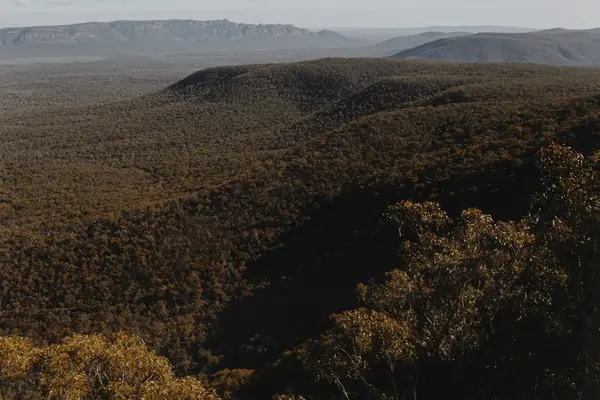

Home › Wine regions › Grampians
Grampians wine region

Photo: Simona Sergi on Unsplash
Western Victoria's old gold-rush wine country: peppery cool-climate Shiraz and a long sparkling Shiraz tradition at Great Western.
Climate and soil
Continental and fairly cool, with vineyards mostly at 240–440 m on the edge of the Grampians (Gariwerd) ranges; nights are cold and frost and drought both test growers. Soils are mainly grey-brown sandy and gravelly loams over clay, with poor fertility that keeps yields small.
Key areas and appellations
Western Victoria zone, Great Western, Halls Gap, Ararat, Stawell
Good to know
Vines arrived with the 1850s gold rush. Best's planted at Great Western in 1866 and still farms an old Nursery Block of many varieties, and Seppelt's Great Western cellars sit in long tunnels ("drives") dug by former gold miners. The district is the home of Australian sparkling Shiraz. Still Shiraz is medium-bodied and spicy, with black pepper and violets rather than jam.
The grapes of Grampians
- Syrah / Shiraz (red): blackberry, pepper, smoke. Best known in Rhône, Barossa, Washington.
- Riesling (white): peach, lime, petrol, honey. Best known in Mosel, Alsace, Finger Lakes.
- Chardonnay (white): apple, lemon, butter, oak. Best known in Burgundy, California, Australia.
- Pinot Noir (red): red cherry, earth, mushroom. Best known in Burgundy, Oregon, New Zealand.
Notable producers in Grampians
- Best's Great Western
- Seppelt
- Mount Langi Ghiran
- The Story Wines
- Grampians Estate
- Fallen Giants
Grampians wines to try
Best's Great Western Bin 1 Shiraz
Grampians · Grampians GI (Great Western) · Shiraz
Medium-weight Victorian Shiraz of plum and mulberry fruit, cracked pepper and a savoury, supple finish.
Food: Lamb chops with rosemary
Food to try with Grampians wines
- Steak: Firm tannins in Cabernet and Tempranillo cut through the fat and char of a seared steak, while peppery Shiraz echoes the sauce.
- Salmon: Salmon is rich enough for a light red: low-tannin Pinot Noir won't clash with the oily fish, and creamy Chardonnay matches its texture.
- Spicy curry: A touch of sweetness and low alcohol in off-dry Riesling cool chilli heat, while fruity rosé handles aromatic spice without turning bitter.
- Roast chicken: Roast chicken is a versatile partner; lightly oaked Chardonnay or a soft, low-tannin Pinot Noir or Merlot suits crisp skin and savoury gravy.
- Cheese board: Mixed cheeses need a mixed line-up: Riesling for soft and blue cheeses, soft Merlot for hard cheeses, and Prosecco's bubbles to refresh.
- Beef bourguignon: The beef is braised in red Burgundy, so Pinot Noir mirrors its earthy mushroom and bacon flavours without overpowering the tender meat.
More wine regions in Australia
The Wine Reference newsletter
New wines, stories and career guides, one email a week at most.
Over 18s only. Unsubscribe any time with one click. Your email is stored securely by Kit and never shared.
Support The Wine Reference
This guide is free, with no paywall. If it helped you choose a bottle, you can buy me a glass and keep it growing.
🍷 Buy me a glass